Invited Speakers
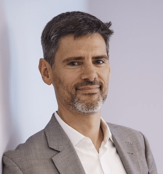
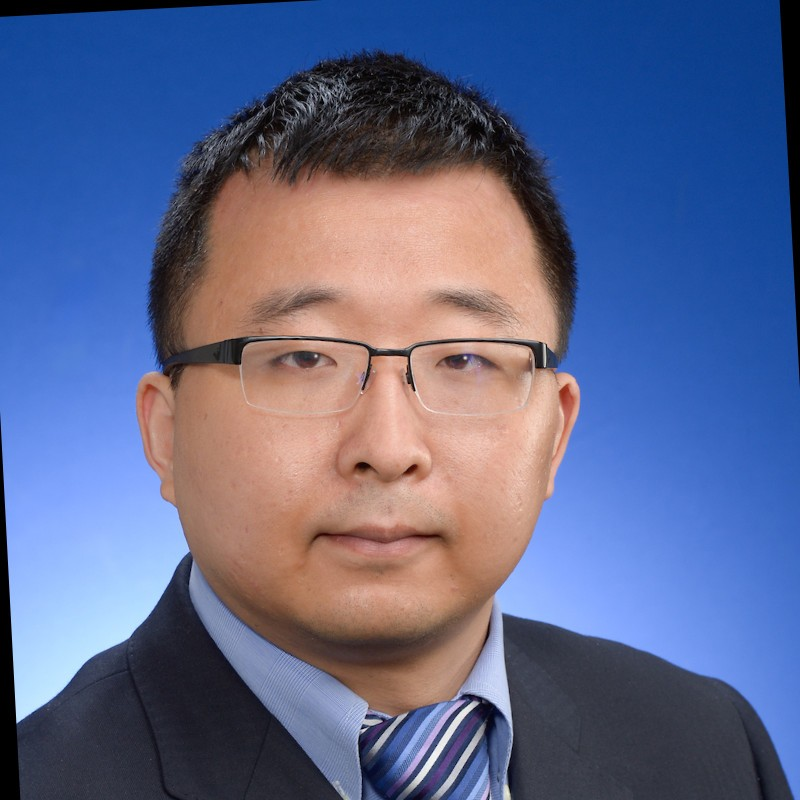
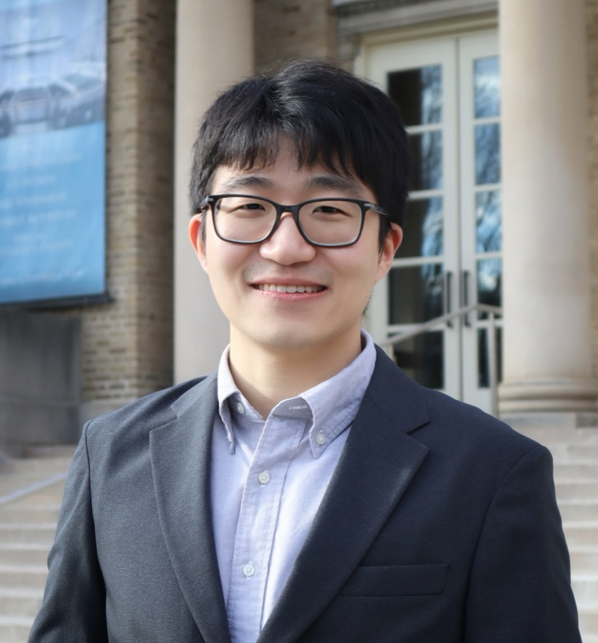
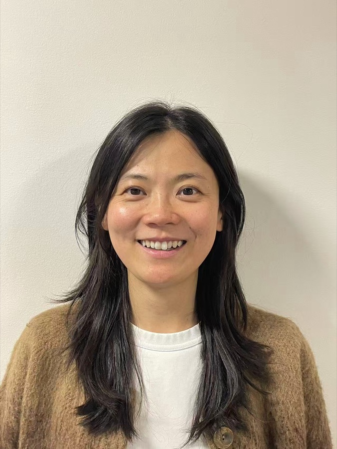
To Be Announced
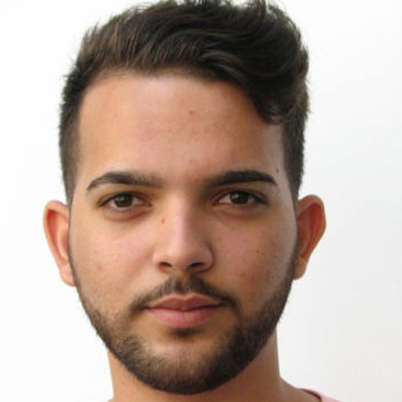
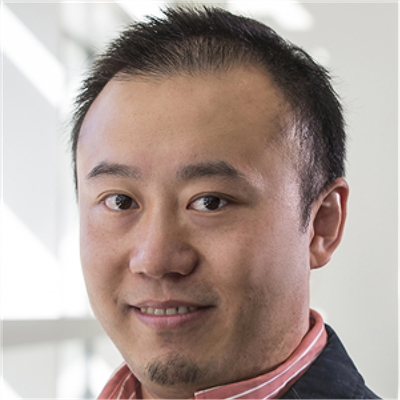
Dr. Jimeng Sun
Health Innovation Professor, Siebel School of Computing and Data Science and Carle Illinois College of Medicine, University of Illinois Urbana-Champaign; Cofounder, Keiji AI
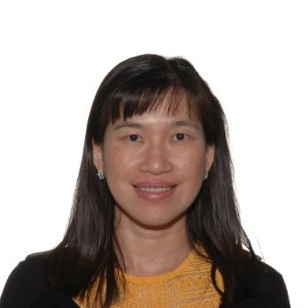
Dr. Yi-Lin Chiu
Director and Department Head, Discovery and Exploratory Statistics (DIVES), Biometrics, AbbVie
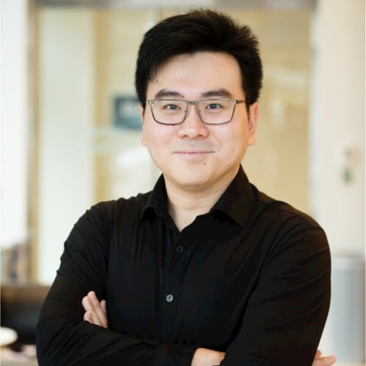

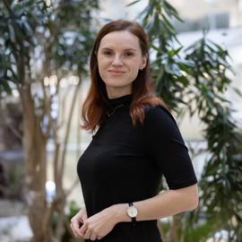
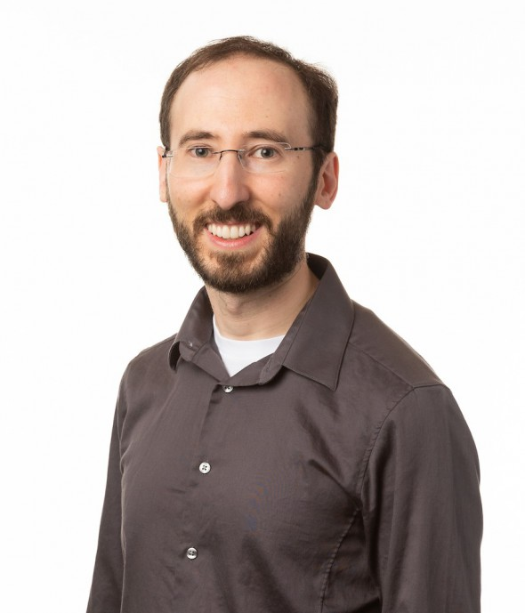
To Be Announced
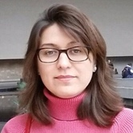
Dr. Fahimeh Mamashli
Associate Director, Data Science, Data and Statistical Science AI/ML, Daiichi Sankyo
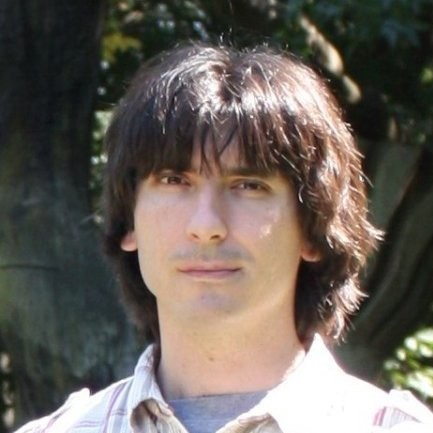
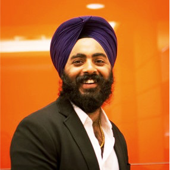
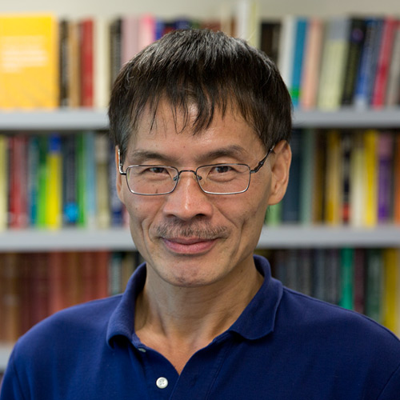
Dr. Ming-Hui Chen
Board of Trustees Distinguished Professor of Statistics, University of Connecticut
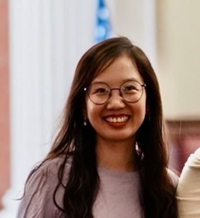